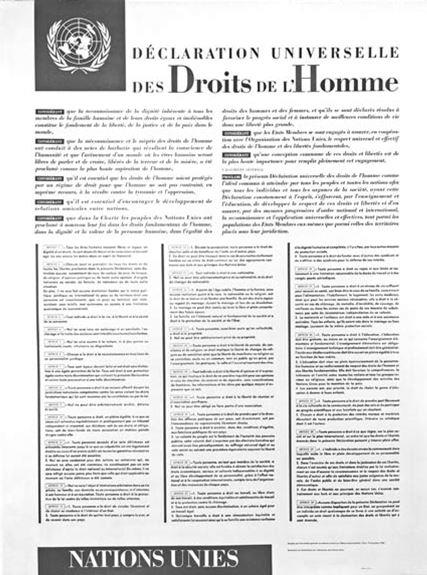
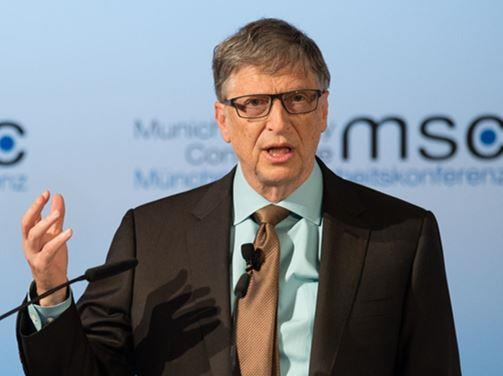
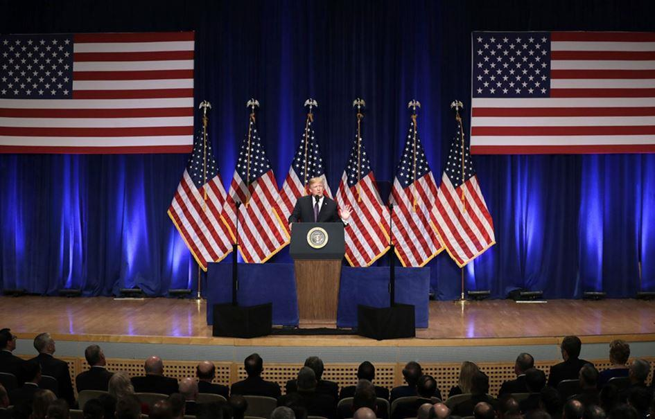
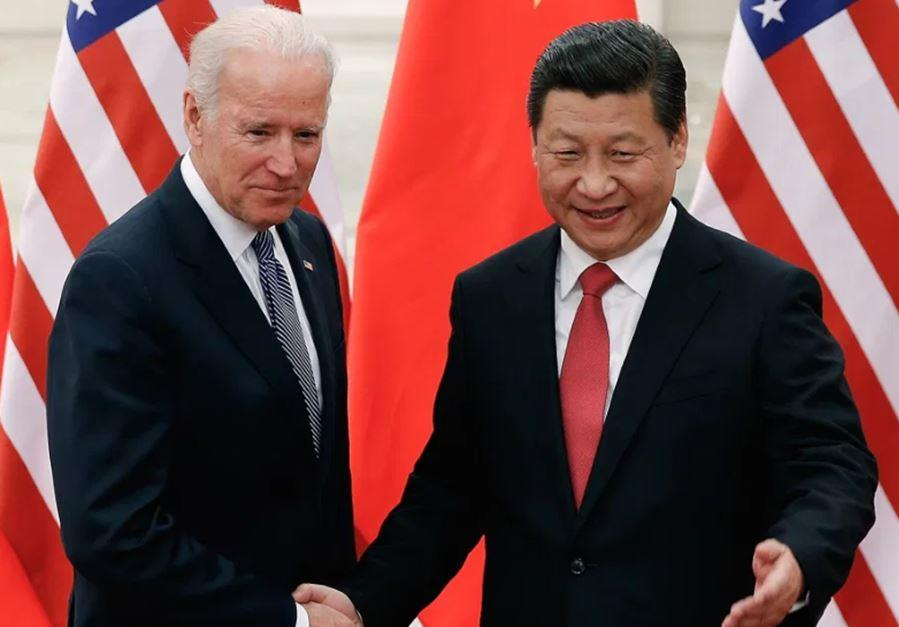

Philippe Mocellin, Maître de Conférence Associé et membre de l’Institut de Droit Public de l’Université de Poitiers de 2013 à 2019, nous invite à dépasser la crise du multilatéralisme, déjà bien engagée avant la crise sanitaire. La pandémie est un accélérateur de l’Histoire : nouvelles puissances, nouvelles technologies, nouveaux enjeux. Le paradoxe du contexte actuel est d’une cruelle évidence : nécessité urgente d’une gouvernance et régulation collective face à un évènement majeur, mais un déficit presque total des réponses transnationales qui ne sont pas à la hauteur.
L’ancien ordre mondial construit dans l’après-guerre - qui, quoiqu’on en dise partageait quelques principes, sinon quelques valeurs - est en voie de balkanisation.
La crise sanitaire actuelle a accéléré une autre crise - certes, plus ancienne -, celle du multilatéralisme : ce mode de coopération internationale – directement issu de la création de l’ONU, après la seconde guerre mondiale - visant, sur la base de procédures communément acceptées, à privilégier la concertation dans le traitement des grandes problématiques planétaires.
Ce qui est en (jeu), c’est la reconstruction d’un ordre mondial avec des systèmes de valeurs différents, avec des puissances nouvelles, des modèles en compétition, des soft power émergents. L’auteur envisage en fin d’article quelques éléments de prospective.
Qu’est-ce que le multilateralisme ?
Pour rappel, le multilatéralisme renvoie, en effet, à ce système international, installé par les États-Unis dès le lendemain de la libération de l’Europe du joug nazi et à l’origine, par l’intermédiaire des Accords de Bretton Woods de juillet 1944, de la fondation des principales institutions mondiales, à savoir :
- le Fonds Monétaire International (FMI) ;
- la Banque Internationale de la Reconstruction et du Développement (BIRD), qui deviendra la Banque mondiale ;
- ou encore le GATT, ancêtre de l’actuelle Organisation Mondiale du Commerce (OMC).
En clair, un système qui repose sur un trépied : le maintien de la paix, la recherche de la prospérité économique et le respect des Droits de l’Homme, en référence au texte de la Déclaration Universelle des Droits de l’Homme, signé en 1948.
Censé tirer les enseignements des événements douloureux de la première moitié du XXe siècle (guerres mondiales, dépression économique de 1929…), le multilatéralisme affiche, dès l’origine, une ambition : celle d’instaurer un nouvel « ordre » mondial stabilisé et universel.
L’entrée dans la Guerre froide brise, néanmoins, ce « rêve ».
Le multilatéralisme ne concerne alors en réalité, dans cette phase initiale, que le seul monde occidental. L’Europe de l’Ouest est alors aidée dans sa reconstruction économique par le Plan Marshall et, par ailleurs, protégée militairement, de la menace soviétique, par l’Organisation du Traité de l’Atlantique
Nord (OTAN), à partir de 1949. Plus encore, le multilatéralisme occidental se déploie régionalement, au travers des premiers pas, en 1951, de la Communauté Européenne du Charbon et de l’Acier (CECA) et quelques années plus tard, de la Communauté Économique Européenne (CEE), appelée à se transformer en une Union Européenne (UE) 1.
A la fin de la Guerre froide, le multilatéralisme, en tant que doctrine en matière de relations internationales, élargit de fait, sa base d’application et permet aux instances mondiales d’intégrer un bon nombre de pays, ex-membres du « glacis » soviétique et ceux ayant appartenu à sa sphère d’influence. Celles-là s’en trouvent naturellement renforcées.
Et pour autant, en dépit des apparences, le « système » a failli au fil des dernières décennies, soumis à de multiples pressions convergentes : l’entrée des nations « émergentes » sur la scène économique mondiale, à l’image d’une Chine expansive, promotrice des nouvelles « routes de la soie », la montée de l’idéologie de l’intégrisme musulman, arguant de sa propre vision « mondialiste » et guerrière ainsi que le retour, dans le même temps, des prétentions d’autres « États-puissances », aspirant, à l’instar des empires « éternels », turc et russe2, à retrouver la « grandeur » d’un passé glorieux….
Comme si le monde du droit et de la justice internationale s’avérait aussi naïf qu’inadapté, face à de nouveaux « chocs » civilisationnels, désormais prévisibles.
Pour preuve, les concepteurs du multilatéralisme de 1945 que sont les États-Unis, oscillant depuis toujours entre isolationnisme et « universalisme » 3, s’en détournent, en considérant, à tort ou à raison, que cette organisation planétaire ne sert plus aujourd’hui leurs intérêts de première puissance mondiale 4.
Deux constats s’imposent alors :
- d’un côté, à la lumière de l’analyse du temps long d’Hubert Védrine 5, la « communauté » internationale a plus que jamais de la peine à exister, au sens d’un vrai partage de « valeurs » ;
- et d’un autre, comme le souligne Pascal Boniface, « jamais l’écart entre la réalité d’un monde globalisé et celle de l’absence d’institutions capables de le gérer n’a été aussi évident que lorsque que la crise du Covid-19 a éclaté »6.
La crise sanitaire a révélé une certaine forme d’inaction ou tout au moins, un réel déficit d’anticipation des institutions multilatérales ; ou dit autrement, un bilan mettant en évidence une insuffisance de règles communes, clairement admises, en capacité de faire face, collectivement et solidairement, à l’urgence épidémique.
Dans ce contexte calamiteux, le désordre semble s’installer, exacerbant d’autant plus les rapports de force géopolitiques, du reste en gestation, bien avant la diffusion de ce nouveau virus.
Nicolas Baverez le confirme par cette assertion limpide : « le monde qui émerge est multipolaire7, dangereux et instable »8.
À ce titre, « le système international se trouve écartelé entre (…) la montée des menaces globales et (…) le repli et la divergence entre les nations ».
Les premières leçons de la pandémie
En 2020, le multilatéralisme n’a pas été véritablement au rendez-vous de la crise sanitaire mondiale :
- un G7 et un G 20, impuissants à réagir, contraints d’admettre que les États-nations étaient les mieux placés pour garantir la santé de leurs ressortissants ;
- un Conseil de sécurité des Nations Unies, en panne d’action et d’initiative et ceci malgré les déclarations alarmistes du secrétaire général, Antonio Guterres ;
- une OMS critiquée 9, voire décrédibilisée, accusée par les États-Unis, d’être à la « solde » des chinois et ayant tardé à déclarer l’épidémie du Covid-19, qui évoluait, avec une très grande rapidité, en pandémie…
Ainsi, les alertes émises en son temps par différents organismes - du Centre d’analyse de la CIA en 2008 à la parution de rapports multiples et variés, après les épidémies (grippe H1N1, virus Ebola…) 10 survenues au cours des années 2000 et 2010, en passant par les « prophéties » de Bill Gates…- à propos de la possible apparition d’une nouvelle maladie virale transmissible, ne semblent pas avoir été entendues par ces instances, pourtant en charge de la « gouvernance » mondiale.
En l’absence de préparation coordonnée, l’effet de « sidération » l’a emporté… Au printemps 2020, la moitié de la population de la planète est confinée. Du jamais vu….
L’épidémie de Covid-19 a fait apparaître au grand jour à quel point le monde s’est inexorablement éloigné (sans y mettre fin) - sur fond de contestations, de violences et de terrorisme - du multilatéralisme, tel que pensé et organisé à l’issue de la Seconde Guerre mondiale.
Parmi les grandes tendances observées, retenons :
- le début « de la fin » de la domination occidentale (après cinq siècles sans partage) et la remise en cause d’un modèle de développement, elle-même alimentée par les hésitations diplomatiques des Etats-Unis et une Europe, fragilisée et divisée, dans le doute permanent, tant sur son projet que sur ce qui constitue sa propre identité… ;
- le fait que l’interdépendance accrue des économies n’implique pas nécessairement l’installation de solidarités planétaires et au moment où les occidentaux font mine de découvrir que la production des médicaments et des matériels (respirateurs, masques, tests…) est, pour l’essentiel, concentrée en Chine, donnant à cette « nation-continent » une supériorité géostratégique… ;
- l’accroissement des rivalités politiques entre les États-Unis et la Chine pour l’hégémonie mondiale 11 , engendrant, au travers d’une guerre commerciale et technologique 12 sans merci, des risques de confrontations plus brutales ;
- une forme de globalisation économique planétaire aujourd’hui réinterrogée, mise à l’épreuve et sommée de rendre des comptes…., sonnant la fin de la «mondialisation heureuse », elle-même articulée, peu ou prou, à un multilatéralisme « béat »….
Si nous en sommes pas encore à une démondialisation « avancée », l’idée noble d’État protecteur et « souverain » réapparait avec force, à la demande même des opinions publiques, refermant, progressivement, la parenthèse d’une globalisation dérégulée et sans entrave 13... .
Le multilateralisme vu des États-Unis
En dehors de ces tendances lourdes, le multilatéralisme a aussi buté, sur la période récente, sur d’autres obstacles majeurs, notamment la suspicion avérée d’une Amérique du Nord, soucieuse de « prioriser », en tout premier lieu, ses « affaires » intérieures.
Donald Trump aura, tout au long de son mandat qui est censé s’achever, chercher à lever toute ambiguïté quant à la posture américaine vis-à-vis du multilatéralisme « onusien ».
« Jadis multilatéralistes » 14 (alternant, cependant, entre des positionnements très variables en fonction des enjeux des conflits régionaux…), les États-Unis ont, par la voix (et les tweets) du Président Trump, fortement critiqué les instances internationales…
Au cours de l’année 2020, les États-Unis décident de se désengager financièrement de l’OMS et d’agir, à leur manière, dans la lutte contre l’épidémie de Covid-19.
Au-delà même de leur retrait des Accords de Paris sur le climat et sur un autre plan, du traité de Vienne concernant le nucléaire iranien ou encore les interrogations explicites à propos de l’OTAN et du rôle de l’OMC, les États-Unis de Donald Trump assument le fait de ne plus s’ériger en « gendarme » planétaire, forcés de porter tout le poids d’un leadership mondial.
Réduisant l’implication américaine dans de nombreuses opérations de maintien de la paix, Donald Trump a soutenu dès 2017, faisant d’ailleurs, que nous le voulions ou non, écho aux tentations de repli de ces prédécesseurs 15 , la ligne de l’Amérique d’abord ! (America First !).
Il a témoigné, en héraut de « l’anti-mondialisme », de son rejet de la notion « d’intérêt mutuel », principe fondateur du multilatéralisme.
Les chinois ont vu, pour leur part, dans ce positionnement outre-Atlantique « une opportunité pour s’imposer davantage sur la scène internationale » 16.
La Chine a ainsi investi - déploiement d’une véritable stratégie de « soft power » - les instances internationales, que ce soit au sein de l’ONU ou de ses différentes agences spécialisées. Xi Jinping s’est alors volontiers présenté, au cours de ces derniers mois, comme le « chantre » d’un nouveau multilatéralisme, exprimant l’ardent désir d’imprimer un « modèle » chinois de la coopération internationale.
Foyer originel de l’épidémie, la Chine n’a eu de cesse de montrer aux occidentaux, à ses « voisins » immédiats au sein du continent asiatique et au monde entier qu’elle a su gérer, dans les meilleures conditions, cette crise sanitaire sans précédent 17.
Force exportatrice de masques en direction de nations occidentales démunies ! Championne attitrée des tests et bientôt, du vaccin ! 18 Et donc désormais prête à s’imposer définitivement comme le continent « ascendant » dans les domaines économiques, scientifiques et militaires face à une première puissance « déclinante » ; un « classique » dans l’histoire de la géopolitique….
Selon le chroniqueur Olivier Babeau 19 , l’année 2020 consacre, à cet égard, le « basculement indiscutable de l’équilibre du monde vers l’Orient et l’évidence d’une forme de déclin économique et politique de puissances occidentales marginalisées sur la scène de l’Histoire ».
Dans ce contexte, Joe Biden, Président en attente d’une intronisation dans les jours prochains, partage avec Donal Trump la même méfiance, voire une hostilité presque viscérale, à l’égard de l’Empire du milieu : ayant d’ailleurs constitué le seul point d’accord affiché entre républicains et démocrates, pendant la campagne électorale de l’automne dernier.
Sans préjuger des orientations qui seront arrêtées par Joe Biden dans un proche avenir, il est possible d’envisager quelques revirements en matière de politique étrangère. Le leader démocrate a dénoncé les attaques de Donald Trump contre les institutions multilatérales, conduisant, selon lui, à affaiblir le poids des États-Unis dans les négociations internationales.
Pour autant, si Joe Biden émet la volonté de revenir dans les enceintes mondiales, celui-ci défend sa propre vision du multilatéralisme, d’abord en cohérence avec les attentes américaines 20.
S’appuyant sur les lois dites « extraterritoriales », adoptées bien antérieurement à l’Administration Trump, les États-Unis comptent bien continuer à peser, à leur façon et afin d’en tirer le meilleur profit pour eux-mêmes, sur les conditions d’exercice du commerce mondial 21 .
Le multilateralisme des possibles
De la realpolitik…
Comme le souligne Nicolas Baverez, « la pandémie bouscule la hiérarchie des puissances entre l’Amérique, l’Asie et l’Europe » 22. Pour être encore plus précis, l’essayiste fait le constat que cette crise sanitaire, au regard de sa dimension planétaire, « est en passe de devenir la matrice du XXIe siècle, comme la première guerre mondiale fut celle du XXe siècle » 23 .
Si la pandémie accélère sans conteste le désordre mondial, pouvons-nous cependant affirmer qu’un ordonnancement de l’humanité ait pu véritablement triompher à un moment de l’histoire ?
Henri Kissinger 24 nous fait part de ses doutes en la matière. Au nom de la realpolitik, l’ex-secrétaire d’État de Richard Nixon et de Gérald Ford, s’interroge, en effet, sur la manière de bâtir un « ordre » du monde au sein duquel s’opposent des visions divergentes et irréconciliables du progrès humain, entretenant un dissensus permanent autour des règles de la vie internationale et sur les objectifs à poursuivre.
Pour en conclure : « devons-nous nous préparer à vivre une époque où des forces échappant au contrôle de toute espèce d’ordre, détermineront l’avenir ? ». 25
Si l’Europe a inventé, au travers de « l’ordre » westphalien (en référence aux traités ratifiés en 1648), la notion « d’équilibre des puissances », force est de reconnaître que cette vision du monde, héritée de cette lointaine conception, fait aujourd’hui débat.
En effet, l’heure n’est plus vraiment à une gestion harmonieuse et pacifiée d’un monde multipolaire mais plutôt à l’affirmation d’une juxtaposition « d’unilatéralismes ». 26
Nous pourrions dire - au moment où le djihadisme fanatique progresse, le terrorisme frappe l’Occident, les communautarismes font vaciller les démocraties et les champs de bataille s’enracinent, en Afrique, au Moyen-Orient ou en Asie centrale - que « l’agitation » permanente et violente que nous vivons apparaît plus que jamais « ordonnée » autour de la confrontation de multiples représentations du monde.
Plutôt que de discourir sans cesse sur la nécessité de construire un nouvel ordonnancement, de plus en plus imaginaire, prenons acte de la pluralité de ces conceptions en compétition, contraignant à négocier sur la base de rapports de force assumés.
Si cette tendance lourde a tout lieu de se confirmer à l’aune de la décennie à venir, il conviendra alors d’inventer de nouvelles formes de coopération multilatérales, tenant compte réalistement de ces intérêts divergents.
Vouloir rebâtir un hypothétique « ordre » multilatéral supposera de trouver les moyens de faire coexister différents « ordres » concurrents : celui des seuls européens, unis et solidaires ? ; celui des européens, tantôt alliés avec la Chine pour contrer les États-Unis, tantôt alliés avec les États-Unis (mais aussi avec l’Inde, le Japon, la Corée du Sud et l’Australie) pour s’opposer à l’Asie dominante ? ; celui du vainqueur final du duel géopolitique sino-américain ? ; ou celui des seuls chinois, entendant affirmer leur suprématie dans le domaine du numérique 27 et en matière de décarbonation de l’économie… ?
Nul ne prétend à ce jour connaître le ou les scénario(s) qui pourrai(en)t l’emporter 28.
… À une nécessaire coopération planétaire
Et pourtant, la pandémie actuelle met à jour une certaine évidence. Aucun pays ou continent ne semble en mesure de régler, à lui tout seul, les grands défis - climatiques, sanitaires, technologiques et terroristes - qui s’imposent à l’échelle planétaire.
Si la demande de « gouvernance mondiale » n’est pas, nous l’avons souligné, dans l’air du temps, la planète demeure à la recherche de règles facilitant l’action diplomatique du quotidien tout en reconnaissant la multiplicité des cultures et des idéologies.
À l’ère de l’anthropocène 29 dans laquelle l’humanité serait rentrée, il s’agit de parvenir à maintenir un certain équilibre, en prévenant au mieux les conflits naissants et attendus.
À ce titre, même si tant de fois repoussée, la réforme de l’ONU reste toujours d’actualité. Michel Camdessus a recensé les pistes utiles en ce domaine. Celles-ci doivent viser un seul objectif : permettre aux responsables politiques de réinvestir « les institutions mondiales au service du bien commun universel (…) en préservant toutes les richesses des diversités » du monde 30.
En attendant une possible transformation des instances onusiennes, ne serait-il pas judicieux de réactiver la forme du G20 ?
En faire d’abord un espace de débat, de confrontations et de régulation au sein duquel les pays les plus faibles devraient être mieux « écoutés » et représentés.
Se doter alors d’un lieu de « gouvernance » en capacité d’aborder les sujets planétaires dans une véritable vision de long terme.
Sortir enfin du « court-termisme » et des discours diplomatiques mièvres et tièdes !
Ne rêvons pas, le G20 ne fera pas disparaître les conflits et les rapports de puissance. L’idée est plutôt de se donner une nouvelle chance, dans ce contexte de crise sanitaire mondiale, en se munissant, sans se substituer à la légitimité des nations souveraines, d’une instance de dernier recours, en mesure « d’adopter en cas de vide juridique des règles de portée universelle ».
Le monde « d’après » ne sera pas plus unifié que celui de l’avant-pandémie. Dans un souci de grande humilité, reconnaissons que nous en sommes réduits à des hypothèses et à de nombreux questionnements. L’enjeu est de concilier, après l’épreuve collective de la pandémie, diversité identitaire et collaboration, concurrence économique et esprit coopératif, technologie et respect du vivant…
P.M.
NOTES ET RÉFÉRENCES
1. Au point d’ailleurs que le modèle original de la CEE inspire d’autres formes de coopérations régionales, à l’instar de l’Association des Nations du Sud-Est Asiatique (ASEAN) créée en 1961 ou encore de l’Organisation de l’Unité Africaine, en 1963. Cf. Régine Perron, La revue géopolitique, Diploweb.com, novembre 2018
2. La Chine, étendant son influence en Asie (tout en renforçant ses positions en Mer de Chine, à Hongkong et à Tawaïn) - au travers de la récente constitution d’une zone de libre-échange économique asiatique - mais aussi sur une grande partie du continent africain ; la Russie, présente à l’Est de l’Europe et au Moyen-Orient ; la Turquie faisant valoir ses intérêts en méditerranée orientale, en Syrie, en Libye et dans le Caucase.
3. Si les Etats-Unis demeurent historiquement plutôt « isolationnistes » en matière de politique étrangère, rappelons ici l’action du Président WoodrowWilson, à l’origine, après le premier conflit mondial, de la constitution de la Société des Nations (SDN), institution multilatérale ayant préfiguré l’installation de l’ONU
4. Un leadership fragilisé au travers du traumatisme des attentats du 11 septembre 2001, des guerres menées, sans résultats probants, au Moyen-Orient, du krach financier de 2008 et plus récemment de l’épidémie du Covid-19
5. Cf son dernier ouvrage autour des débats sur l’après-pandémie mondiale, Et après ? Fayard, 2020
6. Pascal Boniface, Géopolitique du COVID-19. Ce que révèle la crise du coronavirus, Eyrolles, 2020, p. 167
7. Après la phase bipolaire de la Guerre froide qui s’achève au moment de l’implosion de l’ex-URSS en 1991
8. Nicolas Baverez, Qui dominera le monde ? Le Point, 10 décembre 2020
9. Et même si d’autres voix s’élèvent pour indiquer que l’OMS « a été injustement mise en cause », ne serait qu’au regard de ses appels au dépistage massif du Covid-19, soit seulement cent jours après les informations reçues sur les premiers cas et de son implication, somme toute efficace, dans la lutte, par le passé, contre d’autres épidémies comme la variole et le paludisme… Cf. Pascal Boniface, op. cit., 2020, p. 179 et suivantes
10. Cf. dans notre essai, op. cit. 2020, la brève histoire des épidémies ayant frappé l’humanité au fil des siècles
11. Cf. Cyrille Bret, La revue géopolitique, Diploweb.com, avril 2020
12. Comme le souligne Nicolas Baverez, op.cit. « la guerre froide qui s’installe entre les Etats-Unis et la Chine entraîne une partition de la planète, dont l’enjeu est la maîtrise des technologies digitales et le vecteur, la constitution de deux sphères Internet (…) »
13. Cf. les changements souhaitables décrits par Patrick Artus, Olivier Pastré, L’économie post-Covid : les huit ruptures qui nous feront sortir de la crise, Fayard, 2021
14. Expression empruntée à Pascal Boniface, op. cit. p. 169
15. Pascal Boniface, op.cit., 2020, p. 183, fait observer que « Bill Clinton et Barack Obama ont, eux aussi, largement versé, lorsque que c’était nécessaire, dans l’unilatéralisme »
16. Thomas Garnancia, op. cit.
17. Alors que tous les grands pays émergents sont confrontés à ce jour, sous l’effet de la crise sanitaire, à un recul très net de leur activité économique
18. Concurrencée à ce jour par l’efficacité vaccinale du Royaume-Uni et d’Israël !
19. Cf. l’interview paru dans le FigaroVox, le 31 décembre 2020
20. Qui plus est dans une Amérique aujourd’hui « déchirée » et en récession économique
21. Cf sur la question des tensions commerciales entre les Etats-Unis et l’Europe, Marie-Pierre Vedrenne, Le Monde, 5 janvier 2021
22. Nicolas Baverez, Le Point, op. cit.
23. Selon Hubert Védrine « la pandémie entraîne un choc plus violent et plus global que le 11 septembre 2001 (…) et marque, plus particulièrement pour l’Occident, la fin d’une longue période de légèreté et d’inconséquence », FigaroVox, le 5 janvier 2020
24. Cf. Henri Kissinger, L’ordre du monde, Fayard, 2016
25. Cité dans notre essai, op. cit., 2020, p. 98
26. Cf. Pascal Boniface, op.cit., 2020
27. En dépit d’une volonté de contrôle politique des géants du numérique, peu compatible avec « l’esprit de liberté » des entreprises du Web
28. Qu’en sera-t-il de la décennie 2020 s’interroge Nicolas Baverez, op.cit., à savoir la capacité des Etats-Unis et de l’Europe « à se reconstruire »
29. Ou « l’ère du l’humain », qualifiant l’incidence globale de l’activité des Hommes sur l’écosystème
30. Cf. Michel Camdessus, Vers le monde de 2050, Fayard, 2017, p. 197
Partager cette page